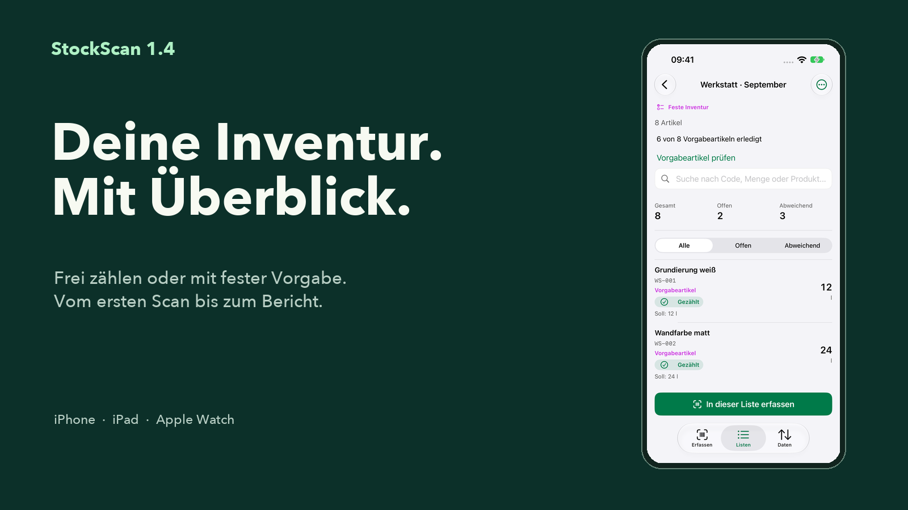

Das komplette Marketingpaket
24 App-Store-Motive für iPhone und iPad, deutsche und englische Banner, Social-Posts, Stories, Texte und Übersichtsbögen.
Marketingpaket ladenOffizielle StockScan-Materialien: echte App-Ansichten, fertige Motive und Texte für Website, Presse und Social Media. Auf Deutsch und Englisch.

24 App-Store-Motive für iPhone und iPad, deutsche und englische Banner, Social-Posts, Stories, Texte und Übersichtsbögen.
Marketingpaket ladenStockScan 1.4 als PNG in 1600 × 900 Pixeln. Für Website, Newsletter und Präsentationen.
PNG herunterladenFertiges Motiv in 1080 × 1080 Pixeln mit echter App-Ansicht.
PNG herunterladenHochformat in 1080 × 1920 Pixeln für Stories und Status-Beiträge.
PNG herunterladenSocial-Media-Grafik im Format 1200 × 630 Pixel. Für Link-Vorschauen und redaktionelle Beiträge.
JPG herunterladenStockScan ist die Inventur-App für iPhone, iPad und Apple Watch. Erfasse Barcodes und Mengen, arbeite frei oder mit fester Artikelvorgabe und exportiere deine Ergebnisse kostenlos als CSV. Pro ergänzt unter anderem Excel-Berichte und private iCloud-Synchronisierung.
Deine Inventur. Mit Überblick. StockScan 1.4 verbindet Erfassen, Listen und Daten in einem klaren Ablauf. Importiere feste Artikelvorgaben, prüfe offene Positionen vor dem Abschluss und nutze deine Vorgabe beim nächsten Mal erneut. Kostenlos starten: 1 aktive Inventur, bis zu 100 Artikel und unbegrenzter CSV-Export.
Material im Regal. Mengen im Blick. Scanne Artikel, berechne Gebinde direkt in der App und nimm deinen Bestand als CSV mit. Für Lager, Werkstatt und Servicefahrzeug – mit einer Kerninventur, die auch offline funktioniert.
Für deine regelmäßige Inventur: StockScan Pro ergänzt unbegrenzte Listen und Artikel, Fast Scan, angereicherte Excel-Berichte, Soll-/Ist-Auswertung und ganze Zähllisten auf der Apple Watch. Optional hält privater iCloud-Sync deine eigenen Geräte auf demselben Stand.
Die Materialien dürfen zur Berichterstattung über StockScan und zur Bewerbung der App verwendet werden. App-Ansichten zeigen fiktive Beispieldaten. Bitte Pro-Kennzeichnungen und Einschränkungen bei Gerätefunktionen beibehalten. Markenrechte bleiben beim jeweiligen Rechteinhaber.